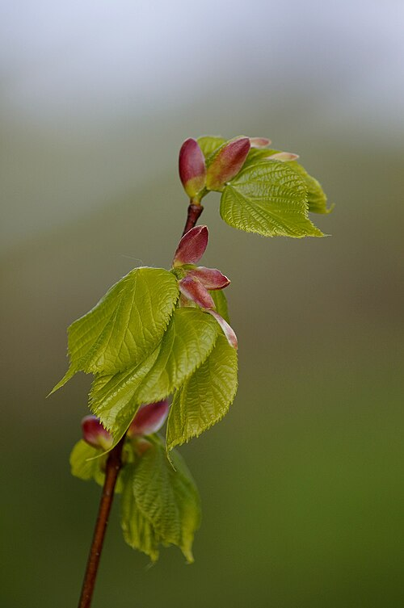

Lipa drobnolistna
Tilia cordata · rodzina ślazowate (Malvaceae) · „lipa serce-listna"



Występowanie
Cała Polska, lasy, aleje
Wysokość
20–30 m (do 1000 lat!)
Kwitnienie
VI – VII (10-14 dni)
Zbiór kwiatów
2-3 dzień kwitnienia
Surowiec
Kwiat lipy (z podsadką)
Aromat
Słodki, miodowy
Opis i występowanie
Drzewo dorastające do 30 m, o gęstej, kulistej koronie. Liście sercowate, ząbkowane, ciemnozielone od góry, niebieskozielone od spodu. Małe (3-7 cm) — stąd „drobnolistna".
Kwiaty żółtawo-białe, drobne, zebrane w wiotkie kwiatostany po 5-7. Charakterystyczna podsadka (skrzydełko) — wąski, jasnozielony liścik przyrośnięty do szypułki kwiatostanu. Skrzydełko jest częścią surowca leczniczego.
Kwitnie w czerwcu-lipcu, na święto Piotra i Pawła (29.06) — stąd przysłowie. Bardzo miododajna — pszczoły szaleją.
Rośnie w lasach mieszanych, alejach, parkach. Sadzona przy świątyniach, dworach. „Drzewo świętej dziewicy" w słowiańskim folklorze.
Skład
| Składnik | Działanie |
|---|---|
| Śluz roślinny (do 10%) | Powlekający, osłaniający |
| Olejek eteryczny (farnezol) | Aromatyczny, lekko przeciwbakteryjny |
| Flawonoidy (kwercetyna, kemferol, hesperydyna) | Napotne, moczopędne |
| Garbniki | Ściągające |
| Saponiny | Wykrztuśne |
| Witamina C, kwasy organiczne | Antyoksydacyjne |
Na co pomaga
- Przeziębienie, grypa — silnie napotne, „wypoci infekcję". Klasyk dziadkowy.
- Gorączka — naturalne obniżanie temperatury.
- Suchy kaszel, drapanie w gardle — śluz powleka i koi.
- Bezsenność, nerwica, stres — łagodzące działanie uspokajające.
- Migreny, bóle głowy związane z napięciem.
- Trawienie u dzieci — łagodzi kolki, niestrawność.
- Zapalenia jamy ustnej i gardła — płukanki.
- Cera wrażliwa, podrażniona — okłady z naparu.
Zbiór i suszenie
- Kiedy: w drugi-trzeci dzień kwitnienia, gdy kwiaty są w pełni rozwinięte ale jeszcze świeże. Wybierz słoneczne dni, po obeschnięciu rosy.
- Co: cały kwiatostan z podsadką! Podsadka zawiera te same substancje co kwiaty.
- Jak: ostrym sekatorem, z dolnych gałęzi. Drabinka pomocna.
- Suszenie: w cieniu, w przewiewnym miejscu, max 35°C. Rozłóż cienką warstwą na siatkach lub powieś w pęczkach.
- Przechowywanie: w szczelnych słoikach. Ważność: 12 mies. Po roku lipa traci aromat i moc.
⚠ Nie zbieraj z lip miejskich przy ruchliwych drogach — kumulują ołów i spaliny. Najlepsza lipa = wiejska, w lesie, w parku z dala od ulic.
Przepisy
🍵 Napar z kwiatu lipy (klasyk na przeziębienie)
- Łyżkę suchych kwiatów z podsadkami zalej szklanką wrzątku.
- Przykryj, parzy 10-15 min.
- Pij gorący 3× dziennie, najlepiej wieczorem do łóżka. Z miodem i sokiem z cytryny.
- Po wypiciu okryj się dobrze — silne pocenie pomaga zwalczyć infekcję.
💡 Mieszanka klasyczna: lipa + kwiat czarnego bzu + owoc maliny (po 1 części). Najsilniejsza herbatka napotna — lipa i bez silnie pocą, malina dostarcza witaminę C i wzmacnia odporność.
🌙 Napar uspokajający przed snem
🛁 Kąpiel lipowa (relaks, na bezsenność)
- 3 garście kwiatów zalej 3 l wrzątku, parzy 30 min pod przykryciem.
- Przecedź, wlej do wanny z ciepłą wodą.
- Kąpiel 20 min, wieczorem. Działa relaksująco i nawilżająco na skórę.
🍯 Syrop lipowy
- 3 garście świeżych kwiatów (z podsadką) zalej 1 l wrzątku.
- Dodaj sok z 2 cytryn, odstaw na 24 h.
- Przecedź, dodaj 1 kg cukru. Gotuj na małym ogniu aż uzyska konsystencję syropu (30-40 min).
- Przelej gorący do wyparzonych słoików.
- Łyżka do herbaty na przeziębienie lub łyżeczka dzieciom.
🍶 Nalewka lipowa
- Świeże, lekko podwiędnięte kwiaty włóż do słoika.
- Zalej alkoholem, maceruj 4 tyg.
- Przecedź, posłódź miodem (~150g).
- 20-30 kropli przy przeziębieniu, lub kieliszek przed snem na sen.
✓ Zalety
- Najklasyczniejsza herbatka „od babci" — sprawdzona
- Bezpieczna dla dzieci od 1 roku
- Bardzo łagodny, słodki smak (dzieci chętnie piją)
- Działanie napotne + uspokajające w jednym
- Można zbierać samodzielnie (drzewa wszędzie)
- Łatwo łączyć z miodem, malinami, melisą
✗ Wady i przeciwwskazania
- Działanie pojawia się tylko po wypiciu gorącego naparu pod kołdrą
- Bardzo długie i częste stosowanie może obciążać serce
- Alergia (rzadko) — szczególnie podczas kwitnienia (pyłek)
- Lipa z miast = zatruta ołowiem (nie zbierać!)
- Krótki sezon zbioru — tylko 10-14 dni w roku
- Po roku traci moc — robić co roku świeży zapas
Ciekawostki
- „Lipie wieki" — lipy żyją do 1000 lat. Najstarsze polskie: Lipa w Cielętnikach (800 lat), Lipa Jana Kochanowskiego w Czarnolesie.
- Jan Kochanowski pisał pod swoją lipą Fraszki: „Gościu, siądź pod mym liściem, a odpoczni sobie!"
- Miód lipowy — najcenniejszy w Polsce. Mocno aromatyczny, jasny. Pomaga przy przeziębieniu.
- Drewno lipowe — miękkie, łatwo się rzeźbi — używane w rzeźbiarstwie ołtarzowym i lalek.
- Lipa = drzewo Pani Bzowej, później Matki Boskiej w słowiańskiej tradycji. Stąd ołtarze, kapliczki pod lipami.
- Pszczoły z jednej lipy mogą dać 30-50 kg miodu rocznie!